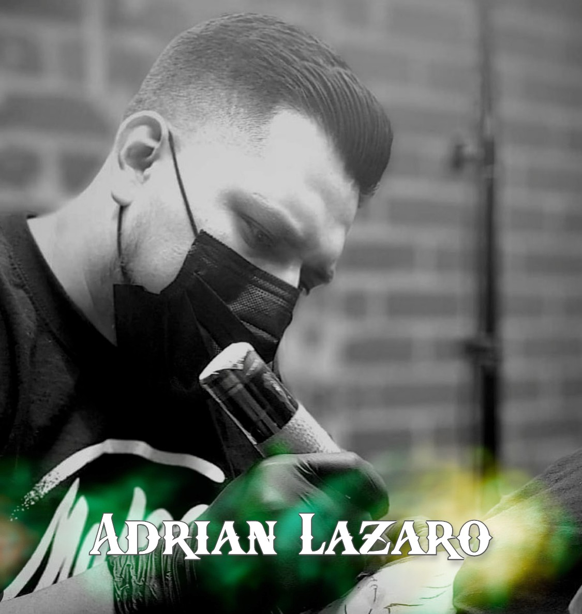

To provide the safest possible tattoo experience for both our clients and artists, we have put into use new procedures while inside of the Studio.
1. We will be strictly appointment only and have one Person per practitioner with plenty of distance between stations.
Unfortunately, this means you may not bring anyone with you to your appointment. We may still be able to accommodate same-day appointments, depending on our schedule. Please give us a call first.
2. We will require everyone to wear a mask at all times while in the Studio. We encourage everyone to think about buying a reusable/washable mask. You will need to keep your mask on. If you do not have a mouth cover, we will provide you one for free.
3. Immediately upon entering, you must use hand sanitizer. Also, we ask that you are carefully clean your phone or other items you will often be touching during your visit. Please leave any items at home or in your car that are non-essential during your visit. We will then take your temperature with our touchless thermometer upon entering the shop.
4. To reduce the amount of contact within the Studio, we have gone digital with our waivers. Now you will fill out your consent and disclosure forms on an iPad that will be thoroughly disinfected after each use or your own iPhone if you have one.
5. By now, this should go without saying but, if you're feeling even the slightest bit unwell, please call us to reschedule. We will be happy to accommodate you.
6. We ask the same of all the artists and staff at Five Ten Tattoo, and your patience is appreciated. Thank you for your support and understanding.
We look forward to making beautiful tattoos with you!
Staff at Five Ten Studio
This was the best tattoo experience I’ve ever had! Not only are the artists extremely talented, but they also make sure that you’re as comfortable as you can possibly be while getting your tattoo done. Shout out to the artist who totally made my experience amazing, ...Totally worth all the pain

I am not exaggerating when I say that I get at least one compliment a day... This tattoo is beyond vibrant, and downright shocks people that it is real. I’ve had people gather around me to stare at it and ooo and ahh countless times. It’s kind of nuts how often it happens!!

There is Zero attitude at Five Ten. The shop is clean and inviting. let me start by saying that everyone at this shop is So talented... I would trust anyone here to ink me.